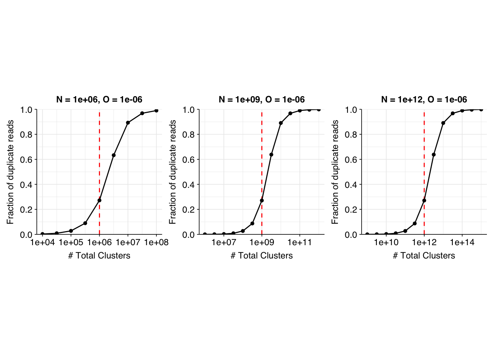
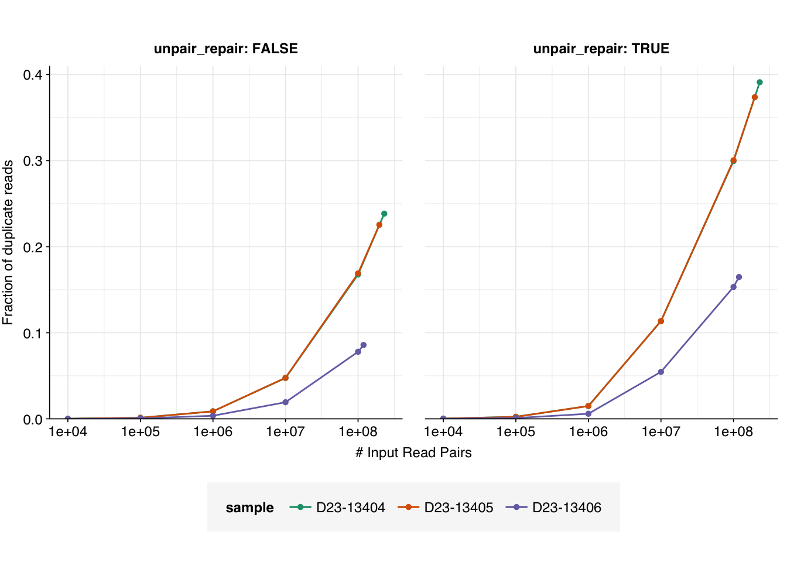

One relevant question for both Project Runway and other NAO sequencing is: what is the maximum read depth at which we can sequence a given sample while retaining an acceptable level of sequence duplication?
As discussed in a previous entry, duplicate reads can arise in sequencing data from a variety of processes, including true biological duplicates present in the raw sample; processing duplicates arising from amplification and other processes during sample and library prep; and sequencing duplicates arising from various processes on the actual flow cell.
As we sequence more deeply, we expect the fraction of biological and processing duplicates (but not, I think, sequencing duplicates) in our read data to increase. In the former case, this is because we are capturing a larger fraction of all the input molecules in our sample; in the latter, because we are sequencing copies of the same sequence over and over again. Intuitively, I expect the increase in processing duplicates to swamp that in biological duplicates at high read depth, at least for library prep protocols that involve amplification1.
One simple approach to investigate the overall effect of read depth on duplication levels in the sample is rarefaction: downsampling a library to different numbers of reads and seeing how the duplication rate changes as a function of read count. In this notebook entry, I apply this approach to sequencing data from the Project Runway initial DNA dataset, to see how duplication rate behaves in this case.
Methods
To analyze the effect of read depth on duplication rates in this data, I first concatenated the raw reads from the two sequencing replicates of each sample together. This allowed the analysis to detect duplicates across replicates, that would have been missed by analyzing them separately.
Next, I performed preprocessing to remove adapter sequences and low-quality bases that might interfere with duplicate detection. I didn’t collapse read pairs together or discard read pairs with overall low quality.
for p in $(cat prefixes.txt); do echo $p; fastp -i raw/${p}_1.fastq.gz -I raw/${p}_2.fastq.gz -o preproc/${p}_fastp_1.fastq.gz -O preproc/${p}_fastp_2.fastq.gz --failed_out preproc/${p}_fastp_failed.fastq.gz --cut_tail --correction --detect_adapter_for_pe --adapter_fasta adapters.fa --trim_poly_x --thread 16 -Q -L; done
I then took each pair of preprocessed FASTQ files and downsampled them to specified numbers of reads, from 10,000 to 100,000,000 in units of 1 OOM, using seqtk sample. I performed downsampling 3 times for each read count, with the intent of calculating duplication rate separately for each replicate and taking the average.
Finally, I ran deduplication with Clumpify on each downsampled pair of read files, as well as the raw preprocessed files, and recorded the fraction of reads discarded in each case. I performed this twice, using different Clumpify settings each time:
First, I attempted to perform deduplication in a maximally comprehensive way, using Clumpify’s unpair repair options to identify and remove duplicates in opposite orientation across read pairs (as discussed here). This configuration finds more duplicates, but (a) might overestimate duplicates in cases where only one read in a pair matches another read, and (b) causes memory-related errors for large subsample sizes.
Second, due to the aforementioned issues with approach 1, I repeated deduplication without Clumpify’s unpair repair options enabled, providing a lower-bound estimate of duplication levels which should be more consistent with estimates provided by, for example, FASTQC.
We can see that the fraction of duplicates reaches quite high levels as we approach the full read count, especially when unpair repair is enabled. It also looks like the gradient of increase is quite high on the linear-log plot, which would suggest that further OOM increases in read depth might result in quite large increases in the fraction of duplicates. It’s also apparent that, for whatever reason, D23-13406 has substantially fewer duplicates at any given read depth than the other two samples.
However, further interpretation of these results, including extrapolation to greater read depths, is made difficult by the lack of a theoretical model for what we expect to see. It’s also not clear what mode of visualization (Linear-log? Log-linear? Log-log? Fraction of duplicates expressed as probabilities or odds? Etc) is most meaningful for interpretation.
To start resolving some of these roadblocks, I spent some time working on a very simple model of read duplication, to see what it might tell us about the expected pattern of duplicates as a function of read depth.
A very very simple model of read duplication
Imagine a sample containing \(N\) distinct molecules, which are uniformly amplified up to \(M = N \times 2^C\) molecules by a perfectly unbiased \(C\)-cycle PCR reaction. Adapters are ligated and the resulting library is washed across the flow cell to generate \(X\) total clusters (again, without bias2). These clusters are then sequenced by a process that generates optical duplicates at some rate \(O\), for a total expectation of \(R=X\times(1+O)\) reads.
Each cluster is selected from the \(M\) molecules in the library, without replacement. When \(C\) is large and amplification is uniform across molecules, this is well-approximated by selecting from the \(N\) input molecules with replacement. Under these conditions, the number of clusters generated from input molecule \(i\) is approximately \(X_i \sim \mathrm{B}(X,N^{-1})\).
The number of optical duplicates generated from a given input molecule is then approximately \(P_i \sim \mathrm{B}(X_i,O)\), and the total number of reads corresponding to a given input molecule is thus \(R_i = X_i + P_i\). The number of duplicates generated from that molecule is then \(D_i = \max(0,R_i - 1)\), and the overall fraction of duplicates is \(F=\frac{D}{R}=\frac{\sum_iD_i}{\sum_iR_i}\) .
The expected fraction of duplicates under this model can be estimated analytically as follows3:
\(E(R_i)=\sum_{r=1}^{2X} r \cdot P(R_i = r) = \sum_{r=1}^{2X}r\cdot\left[\sum_{k=0}^{r}P(X_i = k)\cdot{}P(P_i=r-k|X_i=k)\right]\)
Using computational implementations of these formulae, we can investigate how the fraction of duplicates varies with the number of clusters for different parameter values.
Code
# Define auxiliary functionslog_p_clusters<-function(n_clusters, total_clusters, n_molecules)dbinom(n_clusters, total_clusters, 1/n_molecules, log=TRUE)log_p_opt_dups<-function(n_opt_dups, n_clusters, p_opt_dup)dbinom(n_opt_dups, n_clusters, p_opt_dup, log=TRUE)p_reads<-function(n_reads, total_clusters, n_molecules, p_opt_dup){n_clusters<-n_reads-(0:(n_reads/2))log_p_n_clusters<-log_p_clusters(n_clusters, total_clusters, n_molecules)log_p_n_opt_dups<-log_p_opt_dups(n_reads-n_clusters, n_clusters, p_opt_dup)log_p_reads_clusters<-log_p_n_clusters+log_p_n_opt_dupsreturn(sum(exp(log_p_reads_clusters)))}# Define main functionexp_duplicates<-function(n_molecules, total_clusters, p_opt_dup, initial_vector_length=1e8){pr<-purrr::partial(p_reads, total_clusters =total_clusters, n_molecules =n_molecules, p_opt_dup =p_opt_dup)# Calculate read count probabilitiesn_reads<-1:initial_vector_lengthp_n_reads<-numeric(initial_vector_length)break_zero<-FALSEfor(nin1:length(n_reads)){p<-pr(n_reads[n])if(p==0&&break_zero){n_reads<-n_reads[1:n]p_n_reads<-p_n_reads[1:n]break}elseif(p!=0&&!break_zero){break_zero<-TRUE}p_n_reads[n]<-p}# Calculate fraction of duplicatesn_duplicates<-n_reads-1p_duplicates<-sum(n_duplicates*p_n_reads)/sum(n_reads*p_n_reads)return(p_duplicates)}# Parameter set 1: N = 1e6, O = 1e-6tab_model_1<-tibble(n_molecules =1e6, p_opt_dup =1e-6, total_clusters =round(10^seq(4,8,0.5)))%>%group_by(n_molecules, p_opt_dup)%>%mutate(p_duplicates =sapply(total_clusters, function(x)exp_duplicates(n_molecules, x, p_opt_dup)))g_1<-ggplot(tab_model_1, aes(x=total_clusters, y=p_duplicates))+geom_vline(aes(xintercept =n_molecules), linetype ="dashed", colour ="red")+geom_line()+geom_point(shape =16)+scale_x_log10(name ="# Total Clusters")+scale_y_continuous(name ="Fraction of duplicate reads", limits =c(0,1), breaks =seq(0,1,0.2), expand =c(0,0))+labs(title =paste0("N = ", tab_model_1$n_molecules[1], ", O = ", tab_model_1$p_opt_dup[1]))+theme_base+theme(aspect.ratio =1)# Parameter set 2: N = 1e9, O = 1e-6tab_model_2<-tibble(n_molecules =1e9, p_opt_dup =1e-6, total_clusters =round(10^seq(6,12,0.5)))%>%group_by(n_molecules, p_opt_dup)%>%mutate(p_duplicates =sapply(total_clusters, function(x)exp_duplicates(n_molecules, x, p_opt_dup)))g_2<-ggplot(tab_model_2, aes(x=total_clusters, y=p_duplicates))+geom_vline(aes(xintercept =n_molecules), linetype ="dashed", colour ="red")+geom_line()+geom_point(shape =16)+scale_x_log10(name ="# Total Clusters")+scale_y_continuous(name ="Fraction of duplicate reads", limits =c(0,1), breaks =seq(0,1,0.2), expand =c(0,0))+labs(title =paste0("N = ", tab_model_2$n_molecules[1], ", O = ", tab_model_2$p_opt_dup[1]))+theme_base+theme(aspect.ratio =1)# Parameter set 3: N = 1e12, O = 1e-6tab_model_3<-tibble(n_molecules =1e12, p_opt_dup =1e-6, total_clusters =round(10^seq(9,15,0.5)))%>%group_by(n_molecules, p_opt_dup)%>%mutate(p_duplicates =sapply(total_clusters, function(x)exp_duplicates(n_molecules, x, p_opt_dup)))g_3<-ggplot(tab_model_3, aes(x=total_clusters, y=p_duplicates))+geom_vline(aes(xintercept =n_molecules), linetype ="dashed", colour ="red")+geom_line()+geom_point(shape =16)+scale_x_log10(name ="# Total Clusters")+scale_y_continuous(name ="Fraction of duplicate reads", limits =c(0,1), breaks =seq(0,1,0.2), expand =c(0,0))+labs(title =paste0("N = ", tab_model_3$n_molecules[1], ", O = ", tab_model_3$p_opt_dup[1]))+theme_base+theme(aspect.ratio =1)g_1+g_2+g_3

I don’t want to take these results too seriously, since they’re based on an extremely simple model, but there are some qualitative takeaways that I found helpful to keep in mind when looking at the real data. In particular, the general pattern of the model results is that the fraction of duplicate reads follows a sigmoidal pattern on a linear-log plot:
When \(X << N\), the fraction of duplicates \(F\) is close to zero.
As \(X\) approaches \(N\), the fraction of duplicates begins increasing, first slowly and then (after \(F\) reaches about 0.1) rapidly, before leveling off after \(F\) exceeds about 0.9.
When \(X >> N\), \(F \approx 1\).
At least under the assumptions used here, once the fraction of duplicates goes above 15% or so, further OOM increases in the number of clusters (e.g. by buying more or larger flow cells) will lead to a dramatic increase in the fraction of duplicate reads.
Applying model takeaways
Returning to the results from the BMC data with these modeling results in mind:
Code
g_dup_flat_lin

Assuming that the real data will follow a sigmoidal pattern roughly resembling that from the model, we see that all samples (with the possible exception of D23-13406 when unpair repair is disabled) are in the “danger zone”, such that further OOM increases in read depth will likely lead to a dramatic increase in the fraction of duplicate reads. As such, it probably isn’t worth paying for a further OOM increase (or even half-OOM increase) in read depth for these samples.
Conclusions
Overall, running this analysis was a frustrating experience, due to difficulties finding a configuration of Clumpify (or any other deduplication tool I know of) that (i) I trust to remove duplicates appropriately without predictably over- or under-counting, and (ii) runs well on large FASTQ files. Ultimately, I think we should treat the true level of duplicates as somewhere in between that measured by method 1 (Clumpify with unpair repair enabled) and method 2 (Clumpify with unpair repair disabled).
For the actual virus-detection pipeline, my current best bet is that we should run method 2 on the full dataset, then method 1 on the specific viral hits identified by Kraken2 (or the alignment tool used for validation, once that’s been implemented). However, we ultimately might want to implement our own tool for dealing with this problem.
Nevertheless, I was able to generate rarefaction curves for duplication rate as a function of the number of reads using both methods. The results, in combination with a very simple model I generated to aid interpretation, suggest that we’re probably at about the highest OOM read depth we should aim for in terms of getting useful information from these samples (with the possible exception of D23-13406).
Footnotes
It might be worth explicitly modeling the difference in behavior between different kinds of duplicates as sequencing depth increases, to see if these intuitions are borne out.↩︎
Probably the biggest two improvements that could be made to this model in future are (i) introducing biological duplicates, and (ii) introducing sequence-specific bias in PCR amplification and cluster formation.↩︎
I’d appreciate it if someone else on the team can check my math here.↩︎
Source Code
---title: "Estimating the effect of read depth on duplication rate for Project Runway DNA data"subtitle: "How deep can we go?"author: "Will Bradshaw"date: 2023-11-02format: html: code-fold: true code-tools: true code-link: true df-print: pagededitor: visualtitle-block-banner: black---```{r}#| label: load-packages#| include: falselibrary(tidyverse)library(cowplot)library(patchwork)library(fastqcr)source("../scripts/aux_plot-theme.R")```One relevant question for both Project Runway and other NAO sequencing is: what is the maximum read depth at which we can sequence a given sample while retaining an acceptable level of sequence duplication?As discussed in a previous entry, duplicate reads can arise in sequencing data from a variety of processes, including true biological duplicates present in the raw sample; processing duplicates arising from amplification and other processes during sample and library prep; and sequencing duplicates arising from various processes on the actual flow cell.As we sequence more deeply, we expect the fraction of biological and processing duplicates (but not, I think, sequencing duplicates) in our read data to increase. In the former case, this is because we are capturing a larger fraction of all the input molecules in our sample; in the latter, because we are sequencing copies of the same sequence over and over again. Intuitively, I expect the increase in processing duplicates to swamp that in biological duplicates at high read depth, at least for library prep protocols that involve amplification[^1].[^1]: It might be worth explicitly modeling the difference in behavior between different kinds of duplicates as sequencing depth increases, to see if these intuitions are borne out.One simple approach to investigate the overall effect of read depth on duplication levels in the sample is rarefaction: downsampling a library to different numbers of reads and seeing how the duplication rate changes as a function of read count. In this notebook entry, I apply this approach to sequencing data from the Project Runway initial DNA dataset, to see how duplication rate behaves in this case.# MethodsTo analyze the effect of read depth on duplication rates in this data, I first concatenated the raw reads from the two sequencing replicates of each sample together. This allowed the analysis to detect duplicates across replicates, that would have been missed by analyzing them separately.Next, I performed preprocessing to remove adapter sequences and low-quality bases that might interfere with duplicate detection. I didn't collapse read pairs together or discard read pairs with overall low quality.``` for p in $(cat prefixes.txt); do echo $p; fastp -i raw/${p}_1.fastq.gz -I raw/${p}_2.fastq.gz -o preproc/${p}_fastp_1.fastq.gz -O preproc/${p}_fastp_2.fastq.gz --failed_out preproc/${p}_fastp_failed.fastq.gz --cut_tail --correction --detect_adapter_for_pe --adapter_fasta adapters.fa --trim_poly_x --thread 16 -Q -L; done```I then took each pair of preprocessed FASTQ files and downsampled them to specified numbers of reads, from 10,000 to 100,000,000 in units of 1 OOM, using `seqtk sample`. I performed downsampling 3 times for each read count, with the intent of calculating duplication rate separately for each replicate and taking the average.Finally, I ran deduplication with Clumpify on each downsampled pair of read files, as well as the raw preprocessed files, and recorded the fraction of reads discarded in each case. I performed this twice, using different Clumpify settings each time:1. First, I attempted to perform deduplication in a maximally comprehensive way, using Clumpify's `unpair repair` options to identify and remove duplicates in opposite orientation across read pairs (as discussed [here](https://data.securebio.org/wills-public-notebook/notebooks/2023-11-02_project-runway-comparison.html#conclusions)). This configuration finds more duplicates, but (a) might overestimate duplicates in cases where only one read in a pair matches another read, and (b) causes memory-related errors for large subsample sizes.``` clumpify.sh in=<in1> in2=<in2> out=<out1> out2=<out2> dedupe containment unpair repair ```2. Second, due to the aforementioned issues with approach 1, I repeated deduplication without Clumpify's `unpair repair` options enabled, providing a lower-bound estimate of duplication levels which should be more consistent with estimates provided by, for example, FASTQC.``` clumpify.sh in=<in1> in2=<in2> out=<out1> out2=<out2> dedupe containment ```# ResultsPlotting the fraction of duplicate reads (with or without Clumpify's `unpair repair` options) gives us the following result:```{r}#| warning: false# Import datadata_dir <-"../data/2023-11-06_pr-dedup/"n_dup_path <-file.path(data_dir, "n_dup.csv")n_dup <-read_csv(n_dup_path, show_col_types =FALSE) %>%mutate(n_dup = read_pairs_in - read_pairs_out, p_dup = n_dup/read_pairs_in,o_dup = p_dup/(1-p_dup))# Reshape datan_dup_flat <- n_dup %>%group_by(sample, unpair_repair, read_pairs_in) %>%summarize(p_dup_mean =mean(p_dup), p_dup_sd =sd(p_dup), p_dup_min =max(0,p_dup_mean-p_dup_sd), p_dup_max =min(1, p_dup_mean+p_dup_sd),o_dup_mean =mean(o_dup), o_dup_sd =sd(o_dup), o_dup_min =max(0,o_dup_mean-o_dup_sd), o_dup_max =min(1, o_dup_mean+o_dup_sd), .groups ="drop")# Plot datag_dup_flat_base <-ggplot(n_dup_flat, aes(x=read_pairs_in, y=p_dup_mean, color = sample)) +geom_line() +geom_errorbar(aes(ymin=p_dup_min, ymax=p_dup_max)) +geom_point(shape =16) +scale_x_log10(name ="# Input Read Pairs") +facet_grid(.~unpair_repair, labeller ="label_both") +scale_color_brewer(palette ="Dark2") + theme_base +theme(aspect.ratio =1)g_dup_flat_lin <- g_dup_flat_base +scale_y_continuous(name ="Fraction of duplicate reads", limits =c(0,0.41), breaks =seq(0,1,0.1), expand =c(0,0))g_dup_flat_log <- g_dup_flat_base +scale_y_log10(name ="Fraction of duplicate reads")# Show platsg_dup_flat_ling_dup_flat_log```We can see that the fraction of duplicates reaches quite high levels as we approach the full read count, especially when `unpair repair` is enabled. It also looks like the gradient of increase is quite high on the linear-log plot, which would suggest that further OOM increases in read depth might result in quite large increases in the fraction of duplicates. It's also apparent that, for whatever reason, D23-13406 has substantially fewer duplicates at any given read depth than the other two samples.However, further interpretation of these results, including extrapolation to greater read depths, is made difficult by the lack of a theoretical model for what we expect to see. It's also not clear what mode of visualization (Linear-log? Log-linear? Log-log? Fraction of duplicates expressed as probabilities or odds? Etc) is most meaningful for interpretation.To start resolving some of these roadblocks, I spent some time working on a very simple model of read duplication, to see what it might tell us about the expected pattern of duplicates as a function of read depth.# A very very simple model of read duplication- Imagine a sample containing $N$ distinct molecules, which are uniformly amplified up to $M = N \times 2^C$ molecules by a perfectly unbiased $C$-cycle PCR reaction. Adapters are ligated and the resulting library is washed across the flow cell to generate $X$ total clusters (again, without bias[^2]). These clusters are then sequenced by a process that generates optical duplicates at some rate $O$, for a total expectation of $R=X\times(1+O)$ reads.- Each cluster is selected from the $M$ molecules in the library, without replacement. When $C$ is large and amplification is uniform across molecules, this is well-approximated by selecting from the $N$ input molecules with replacement. Under these conditions, the number of clusters generated from input molecule $i$ is approximately $X_i \sim \mathrm{B}(X,N^{-1})$.- The number of optical duplicates generated from a given input molecule is then approximately $P_i \sim \mathrm{B}(X_i,O)$, and the total number of reads corresponding to a given input molecule is thus $R_i = X_i + P_i$. The number of duplicates generated from that molecule is then $D_i = \max(0,R_i - 1)$, and the overall fraction of duplicates is $F=\frac{D}{R}=\frac{\sum_iD_i}{\sum_iR_i}$ .- The expected fraction of duplicates under this model can be estimated analytically as follows[^3]: - $E(R_i)=\sum_{r=1}^{2X} r \cdot P(R_i = r) = \sum_{r=1}^{2X}r\cdot\left[\sum_{k=0}^{r}P(X_i = k)\cdot{}P(P_i=r-k|X_i=k)\right]$ - $E(D_i) = \sum_{r=1}^{2X} (r-1) \cdot P(R_i = r)$ - $E(D) = E\left(\sum_i D_i\right) = N \cdot E(D_i)$ - $R = \sum_i R_i = \sum_r r \cdot \mathbb{N}(R_i = r)$ - When $N$ is large, $\mathbb{N}(R_i = r) \approx N \cdot P(R_i = r)$, and so $R \approx \sum_r r \cdot N \cdot P(R_i = r) = N \cdot E(R_i)$ - Hence $E\left(\frac{1}{R}\right) \approx \frac{1}{N \cdot E(R_i)}$ - Thus $E(F) = E\left(\frac{D}{R}\right) = E(D) \cdot E\left(\frac{1}{R}\right) \approx \frac{N \cdot E(D_i)}{N \cdot E(R_i)} = \frac{E(D_i)}{E(R_i)}$[^2]: Probably the biggest two improvements that could be made to this model in future are (i) introducing biological duplicates, and (ii) introducing sequence-specific bias in PCR amplification and cluster formation.[^3]: I'd appreciate it if someone else on the team can check my math here.Using computational implementations of these formulae, we can investigate how the fraction of duplicates varies with the number of clusters for different parameter values.```{r}# Define auxiliary functionslog_p_clusters <-function(n_clusters, total_clusters, n_molecules) dbinom(n_clusters, total_clusters, 1/n_molecules, log=TRUE)log_p_opt_dups <-function(n_opt_dups, n_clusters, p_opt_dup) dbinom(n_opt_dups, n_clusters, p_opt_dup, log=TRUE)p_reads <-function(n_reads, total_clusters, n_molecules, p_opt_dup){ n_clusters <- n_reads - (0:(n_reads/2)) log_p_n_clusters <-log_p_clusters(n_clusters, total_clusters, n_molecules) log_p_n_opt_dups <-log_p_opt_dups(n_reads - n_clusters, n_clusters, p_opt_dup) log_p_reads_clusters <- log_p_n_clusters + log_p_n_opt_dupsreturn(sum(exp(log_p_reads_clusters)))}# Define main functionexp_duplicates <-function(n_molecules, total_clusters, p_opt_dup, initial_vector_length =1e8){ pr <- purrr::partial(p_reads, total_clusters = total_clusters, n_molecules = n_molecules, p_opt_dup = p_opt_dup)# Calculate read count probabilities n_reads <-1:initial_vector_length p_n_reads <-numeric(initial_vector_length) break_zero <-FALSEfor (n in1:length(n_reads)){ p <-pr(n_reads[n])if (p ==0&& break_zero){ n_reads <- n_reads[1:n] p_n_reads <- p_n_reads[1:n]break } elseif (p !=0&&!break_zero){ break_zero <-TRUE } p_n_reads[n] <- p }# Calculate fraction of duplicates n_duplicates <- n_reads -1 p_duplicates <-sum(n_duplicates * p_n_reads)/sum(n_reads * p_n_reads)return(p_duplicates)}# Parameter set 1: N = 1e6, O = 1e-6tab_model_1 <-tibble(n_molecules =1e6,p_opt_dup =1e-6,total_clusters =round(10^seq(4,8,0.5))) %>%group_by(n_molecules, p_opt_dup) %>%mutate(p_duplicates =sapply(total_clusters, function(x) exp_duplicates(n_molecules, x, p_opt_dup)))g_1 <-ggplot(tab_model_1, aes(x=total_clusters, y=p_duplicates)) +geom_vline(aes(xintercept = n_molecules), linetype ="dashed", colour ="red") +geom_line() +geom_point(shape =16) +scale_x_log10(name ="# Total Clusters") +scale_y_continuous(name ="Fraction of duplicate reads", limits =c(0,1), breaks =seq(0,1,0.2), expand =c(0,0)) +labs(title =paste0("N = ", tab_model_1$n_molecules[1], ", O = ", tab_model_1$p_opt_dup[1])) + theme_base +theme(aspect.ratio =1)# Parameter set 2: N = 1e9, O = 1e-6tab_model_2 <-tibble(n_molecules =1e9,p_opt_dup =1e-6,total_clusters =round(10^seq(6,12,0.5))) %>%group_by(n_molecules, p_opt_dup) %>%mutate(p_duplicates =sapply(total_clusters, function(x) exp_duplicates(n_molecules, x, p_opt_dup)))g_2 <-ggplot(tab_model_2, aes(x=total_clusters, y=p_duplicates)) +geom_vline(aes(xintercept = n_molecules), linetype ="dashed", colour ="red") +geom_line() +geom_point(shape =16) +scale_x_log10(name ="# Total Clusters") +scale_y_continuous(name ="Fraction of duplicate reads", limits =c(0,1), breaks =seq(0,1,0.2), expand =c(0,0)) +labs(title =paste0("N = ", tab_model_2$n_molecules[1], ", O = ", tab_model_2$p_opt_dup[1])) + theme_base +theme(aspect.ratio =1)# Parameter set 3: N = 1e12, O = 1e-6tab_model_3 <-tibble(n_molecules =1e12,p_opt_dup =1e-6,total_clusters =round(10^seq(9,15,0.5))) %>%group_by(n_molecules, p_opt_dup) %>%mutate(p_duplicates =sapply(total_clusters, function(x) exp_duplicates(n_molecules, x, p_opt_dup)))g_3 <-ggplot(tab_model_3, aes(x=total_clusters, y=p_duplicates)) +geom_vline(aes(xintercept = n_molecules), linetype ="dashed", colour ="red") +geom_line() +geom_point(shape =16) +scale_x_log10(name ="# Total Clusters") +scale_y_continuous(name ="Fraction of duplicate reads", limits =c(0,1), breaks =seq(0,1,0.2), expand =c(0,0)) +labs(title =paste0("N = ", tab_model_3$n_molecules[1], ", O = ", tab_model_3$p_opt_dup[1])) + theme_base +theme(aspect.ratio =1)g_1 + g_2 + g_3```I don't want to take these results too seriously, since they're based on an extremely simple model, but there are some qualitative takeaways that I found helpful to keep in mind when looking at the real data. In particular, the general pattern of the model results is that **the fraction of duplicate reads follows a sigmoidal pattern on a linear-log plot**:- When $X << N$, the fraction of duplicates $F$ is close to zero.- As $X$ approaches $N$, the fraction of duplicates begins increasing, first slowly and then (after $F$ reaches about 0.1) rapidly, before leveling off after $F$ exceeds about 0.9.- When $X >> N$, $F \approx 1$.At least under the assumptions used here, once the fraction of duplicates goes above 15% or so, further OOM increases in the number of clusters (e.g. by buying more or larger flow cells) will lead to a dramatic increase in the fraction of duplicate reads.# Applying model takeawaysReturning to the results from the BMC data with these modeling results in mind:```{r}g_dup_flat_lin```Assuming that the real data will follow a sigmoidal pattern roughly resembling that from the model, we see that all samples (with the possible exception of D23-13406 when `unpair repair` is disabled) are in the "danger zone", such that further OOM increases in read depth will likely lead to a dramatic increase in the fraction of duplicate reads. As such, **it probably isn't worth paying for a further OOM increase (or even half-OOM increase) in read depth for these samples**.# Conclusions- Overall, running this analysis was a frustrating experience, due to difficulties finding a configuration of Clumpify (or any other deduplication tool I know of) that (i) I trust to remove duplicates appropriately without predictably over- or under-counting, and (ii) runs well on large FASTQ files. Ultimately, I think we should treat the true level of duplicates as somewhere in between that measured by method 1 (Clumpify with `unpair repair` enabled) and method 2 (Clumpify with `unpair repair` disabled). - For the actual virus-detection pipeline, my current best bet is that we should run method 2 on the full dataset, then method 1 on the specific viral hits identified by Kraken2 (or the alignment tool used for validation, once that's been implemented). However, we ultimately might want to implement our own tool for dealing with this problem.- Nevertheless, I was able to generate rarefaction curves for duplication rate as a function of the number of reads using both methods. The results, in combination with a very simple model I generated to aid interpretation, suggest that we're probably at about the highest OOM read depth we should aim for in terms of getting useful information from these samples (with the possible exception of D23-13406).